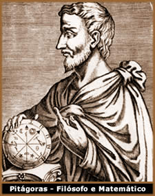

A numerologia é um ramo de
estudo incluso no que é comumente conhecido por Ciências
Ocultas; ou seja, a combinação de conhecimentos
de ordem mística com uma fundamentação científica.
Deste modo, a numerologia pode ser compreendida como o estudo
da significação oculta dos números e de sua
influência em aspectos da vida cotidiana, da espiritualidade,
do intelecto, entre outros.
A numerologia pode ter sua origem
na gematria, um sistema que tem seus primeiros registros
na Torá, datando de mais de três mil anos. A gematria
consiste em atribuir um valor numérico às letras
que compõem somente o alfabeto hebraico. O resultado da
soma dos valores numéricos relacionados às letras
de uma determinada palavra atribui a esta uma característica
específica. Desse modo, a numerologia seria apenas uma
"versão" da gematria adaptada ao alfabeto romano.
Por
outro lado, a origem da numerologia pode estar nos estudos do
filósofo e matemático grego Pitágoras (571/0
a.C – 497/6 a.C). Segundo o filósofo, os números
são a essência física e etérea de tudo
que há no universo. Os números trazem características
próprias. Quando combinados ou calculados, expressam uma
relação estreita e harmônica com fenômenos
naturais como o ciclo das estações e movimento dos
astros, ou com a harmonia musical e proporções geométricas.
Entretanto, devido à biografia confusa e obscura de Pitágoras,
parte de sua conceituação matemática combina-se
com noções esotéricas. Por este motivo, seus
pensamentos e estudos não são totalmente aceitos
por pesquisadores.
A numerologia também é
utilizada como uma ferramenta de autoconhecimento. É possível,
utilizando-se como referência uma tabela que relaciona letras
a valores numéricos, realizar a soma das letras que compõem
um nome próprio ou dos números de uma data específica,
e assim obter um resultado que deve ser reduzido a um dígito
(de 1 a 9), que expressaria individualmente "vibrações
numerológicas". Ainda, em algumas tabelas, considera-se
resultados compostos por dois dígitos iguais, como 11,
22, 33, etc.
Também, de um modo geral,
é razoavelmente comum a prática da alteração
de nomes próprios com o propósito de que, sob o
ponto de vista da numerologia, esta mudança produza vibrações
mais favoráveis. Nestes casos, costuma-se alterar a grafia
do nome, seja substituindo letras de fonética semelhante,
acrescentando ou suprimindo preposições, entre outros.
Porém, não é
possível afirmar que haja um número com características
superiores a outros. Cada número possui propriedades positivas
e negativas, que podem favorecer ou dificultar o desenvolvimento
de determinadas atividades, situações, profissões,
relacionamentos afetivos, financeiros, etc.
Abordagens
Numerológicas
Apesar de ser estudada e praticada
há milhares de anos, a numerologia mantém uma certa
unidade estrutural; isto é, não sofreu muitas transformações
ao longo da história, mesmo sendo adotada por escolas e
tradições esotéricas bem diversificadas.
Mas, ainda, há pelo menos dois ramos de abordagem da numerologia:
Numerologia Pitagórica e Numerologia Cabalística.
A numerologia pitagórica
baseia-se exatamente nos fundamentos matemáticos de Pitágoras.
Não é considerada divinatória, mas apenas
expõem tendências futuras em relação
às vibrações produzidas por números.
A numerologia pitagórica é mais popular devido ao
fato de ser menos complexa, podendo ser praticada seguindo a orientação
de tabelas. Entretanto, sua interpretação exige
maior sensibilidade e experiência do praticante.
A numerologia cabalística
combina-se com os fundamentos da Cabala (um complexo
sistema filosófico-religioso dos hebreus). A prática
e a interpretação desta abordagem da numerologia
exige um conhecimento prévio da Cabala. Entretanto, assim
como a numerologia pitagórica, se utiliza de cálculos
e relações geométricas.
A numerologia cabalística
busca referências no Antigo Testamento, para fundamentar
sua própria origem, a importância dos números
e sua relação com nomes. Por exemplo, "Então
disse: Não te chamarás mais Jacó, mas Israel;
porque tens lutado com Deus e com os homens e tens prevalecido."
(Gênesis – Cap. 32 – Vers. 28). Segundo a interpretação
de praticantes da numerologia cabalística, esse trecho
bíblico faz uma referência clara à importância
de que um nome seja alterado para que, conseqüentemente,
suas vibrações numerológicas tornem-se mais
positivas.
Apesar de tão antiga
e conhecida, a numerologia ainda não é unanimidade
entre estudiosos das Ciências Ocultas. Mas, seja qual for
sua abordagem, a numerologia consiste em um campo de estudo muito
amplo que necessita ser seriamente explorado.
Por
Spectrum